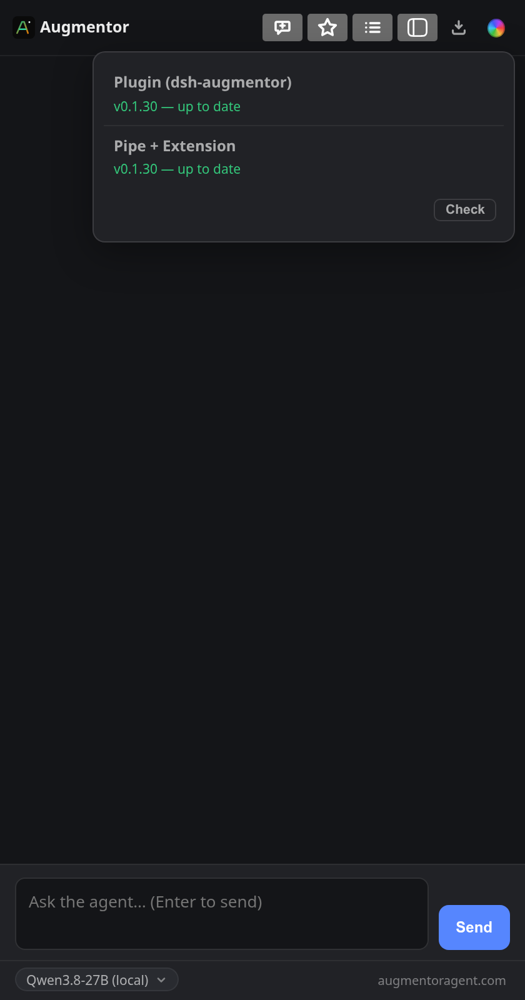

Browser control v0.1.32
Augmentor
Give your agent hands in your real browser. It can open pages, read them, click and type while you follow along in a Chromium side panel.
- Research across tabs and collect information.
- Fill forms and work through repetitive web tasks.
- See when the agent is acting through its visible frost veil.
For Linux with Chromium. Includes the DSH plugin, browser extension and native host; set up all three using the guide.
